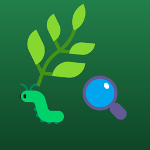
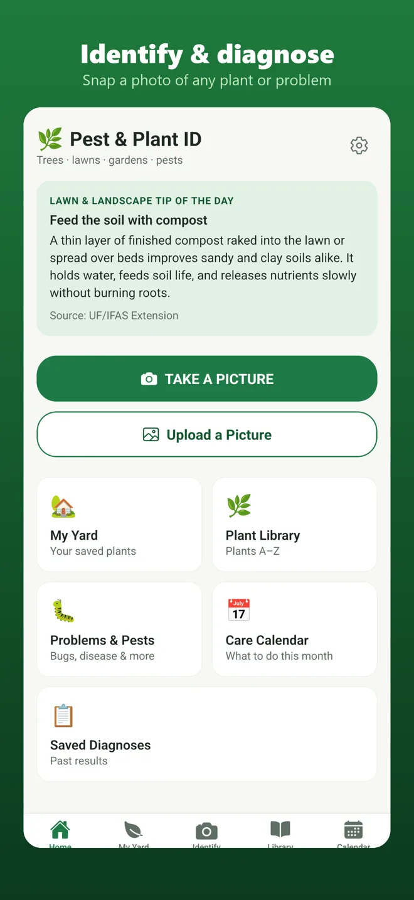
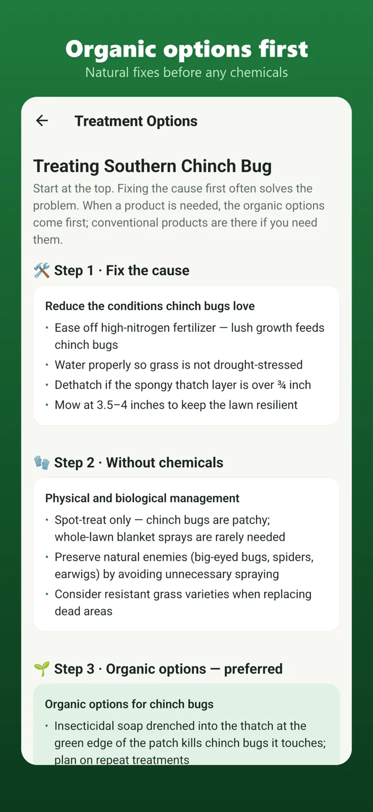
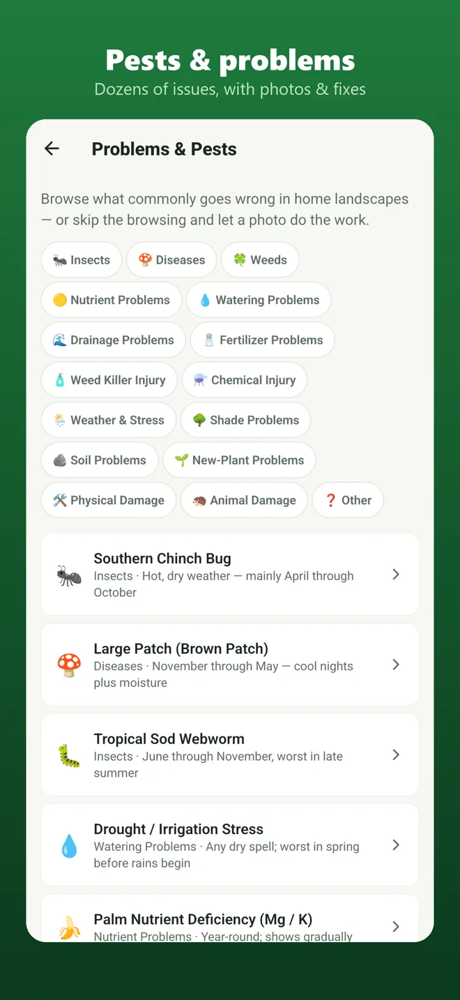
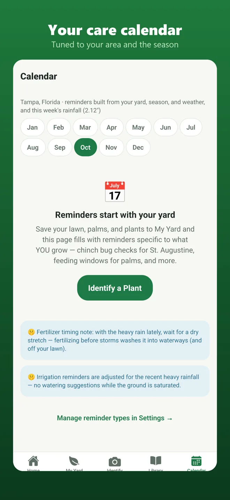

Organic Pest & Plant IDIdentify any plant and diagnose lawn, tree and garden problems from one picture. Honest answers with a confidence level, organic fixes first, and conventional products only as a last resort.
Your first check each month is free. No account, no sign-up.


Built for homeowners and lawn pros who want a straight answer, not a guess.

Brown patches, yellow leaves, bugs, fungus, watering trouble. Get an immediate first impression, then answer a few optional questions to narrow it down.
Every problem gets a step-by-step plan: fix the cause, non-chemical fixes, organic options, and only then a conventional product.

A plant library with cited university research, My Yard to save your plants, and a care calendar tuned to your area and the season.
We would rather say "take another photo" than give you a confident wrong answer.
The library, Problems & Pests, My Yard and the Care Calendar are always free.